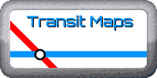

Welcome to my website!!
Hi, I'm Hester, a former computer science student at Cambridge Maths School. I have been learning to code using JavaScript and make basic websites with HTML. I love trains and railways, and I occasionally make transit maps which you can view or download here too!
|
 |
Changelog
- 3/11/25 - Paper IDE and spelling fixes to MRDH map
- 26/10/25 - Uploaded the mega Metropoolregio Rotterdam Den Haag metro map (and trams and trains)!
- 3/9/25 - Uploaded train/tram map of Manchester
- 1/7/25 - Added maps and about pages
- 27/6/25 - Redesigned homepage in a y2k aesthetic.
Links
- CMS Computer Science website (class of 2023)
- The Maths Universe
- Internet Archive Wayback Machine
- Desmos Graphing Calculator
- Hacker News
- Codewars
- Learn Anything
- Perplexity AI
- The Useless Web
- Draw-io - Flowchart/Diagram Editor (I use this to make my maps!)
- Detexify - converts hand drawn maths symbols to LaTeX
- Unicode it - converts LaTeX to Unicode